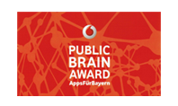
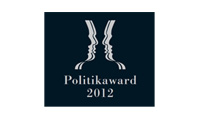

Employees
Around 3000 assiduous employees currently working at ]init[. Unity and team work are keys for success of legendary projects within time indeed with contended quality. Together we reliaby implement large and highly complex projects according to our high standards of quality. The resulting expansion of our portfolio and the consolidation of our competencies often lead to pioneering projects.
Projects
Efficient, user-friendly projects makes it easier for organizations to reach their goals. Quality, budget and Time makes it a successful one. ]init[ offers the software solutions necessary to integrate diverse business processes into complex portals across standardized interfaces. We creates innovative customized applications for your processes and procedures, and combines them with intuitive user interfaces.
Prizes and Awards
Prizes & Awards Innovation is the basis of future-proof solutions. With this in mind, we follow the latest trends and current developments in IT, in order to incorporate them into forward-looking products and services.This enables us to create tailor-made solutions for our clients with high levels of quality, reliability, and security. Your satisfaction is our benchmark. We are, of course, also delighted that our work has been recognized with a number of prizes and awards
 